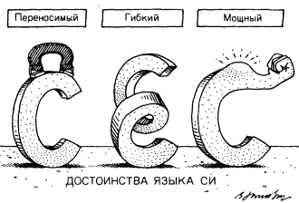

C# ("Си шарп") – это язык программирования от компании Microsoft. Изначально его создавали для проектов под Windows, но теперь это по-настоящему универсальный язык: на нём пишут игры, десктопные приложения, веб-сервисы, нейросети и даже графику для метавселенных. С# живет по принципу «всякая сущность есть объект». Его причисляют к объектно-ориентированным, а точнее объектным, языкам программирования. Язык основан на строгой компонентной архитектуре и реализует передовые механизмы обеспечения безопасности кода. Сторонники C# называют его самым мультипарадигменным, универсальным, продвинутым и удобным в использовании языком программирования.
Далекие предки C# появились еще в 60-х годах. Все началось с появления языка B, который в 1969 году был создан коллективом разработчиков из Технологического института Массачусетса (MIT). Главным автором B является Кен Томпсон. Тогда команда работала над операционной системой UNIX. Уже существовавший язык PL/I, применявшийся в то время для мэйнфреймов производства компании IBM, был достаточно громоздким и меньше подходил для поставленной задачи. Поэтому ученые решили создать новый язык, который и получил название B. Он является типичным представителем ранних императивных языков программирования. После B, как это ни странно, последовал С, который был изобретен в 1972 году. Основой для нового языка послужил сам B. Создателями C были Кен Томпсон и Денис Ритчи, которые работали в исследовательской лаборатории компании AT&T (AT&T Bell Telephone Laboratories). В 1971 году Ритчи начал создавать расширенную версию B. Сначала он назвал её NB (New B), но когда язык стал сильно отличаться от B, название сменили на C. B расширился за счет явного использования типов, структур и ряда новых операций. По поводу возникновения языка Си Питер Мойлан в своей книге «The case against C» писал: «Нужен был язык, способный обойти некоторые жесткие правила, встроенные в большинство языков высокого уровня и обеспечивающие их надежность. Нужен был такой язык, который позволил бы делать то, что до него можно было реализовать только на ассемблере или на уровне машинного кода».
Название «Си шарп» (от англ. sharp — диез) несет «сакральный» смысл. Знак «#» (в музыкальной нотации читается как «диез») означает повышение высоты звука на полтона. С другой стороны, название «C#» получается путем следующей «эволюционной цепочки»: C → C++ → C++++(C#), так как символ «#» можно составить из 4-х знаков «+». Вследствие технических ограничений на отображение (стандартные шрифты, браузеры и т. д.) и того, что знак диез ♯ не представлен на стандартной клавиатуре, знак # был выбран для представления знака диез при записи имени языка программирования. Это соглашение отражено в Спецификации Языка C# ECMA-334. Названия языков программирования не принято переводить, поэтому язык следует называть по-английски «Си шарп». Авторами этого языка программирования стали Скотт Вилтамут и Андерс Хейльсберг — создатель Турбо Паскаля и Дельфи, перешедший в 1996 году в Microsoft. По одной из версий, он вынашивал замысел нового языка и даже новой платформы (которая сейчас носит название .NET), еще работая в компании Borland. C# поддерживает все три «столпа» объектно-ориентированного программирования: инкапсуляцию, наследование и полиморфизм. Кроме того, в нем была реализована автоматическая «сборка мусора», обработки исключений, динамическое связывание.
Работа над C# началась в декабре 1998 года. Проект получил кодовое название COOL (C-style Object Oriented Language). Первая бета-версия C# 1.0 увидела свет летом 2000 года, а в феврале 2002 вместе с Microsoft Visual Studio вышла окончательная версия языка. Так как C# сочетает лучшие стороны предшествующих ей популярных языков программирования в виде C, Java и C++, программистам легко осуществить переход на C#, основываясь на знаниях любого из перечисленных языков. Главным отличием от предшественников стала возможность написания компонентов. В C# появились такие средства, как события, методы и свойства.
C# — распространенный язык программирования, и не просто так. Он имеет следующие преимущества:
Недостатки C# не очень значительны, и язык остается одним из самых популярных в мире.
Сравнительная таблица C# и Python:
| C# | Python |
| Сложность | Простота |
| Написание скриптов только в IDE | Написание скриптов в любой среде |
| Мало библиотек | Много библиотек |
| Высокая производительность | Низкая производительность |
Подробнее об отличиях и преимуществах C# перед другими языками: Различия между C# и другими языками программирования: яблоки, апельсины и немного C-Sharp
Console.WriteLine("Бикмеева Алиса Эдуардовна");
Console.WriteLine("УБ22-08Б");
Console.WriteLine("2 вариант");
Console.WriteLine("Дана длина ребра куба.Найти площадь грани, площадь полной поверхности и объем этого куба.");
Console.WriteLine("Введите длину ребра куба");
double a, // длина ребра куба
Sgrani, // площадь грани
Spov, // площадь полной поверхности
V; // объем этого куба
a = Convert.ToDouble(Console.ReadLine());
Sgrani = a * a;
Spov = a * a * 6;
V = a * a * a;
Console.WriteLine("Площадь грани куба равна = " + Sgrani);
Console.WriteLine("площадь поверхности куба равна = " + Spov);
Console.WriteLine("объем куба равен = " + V);
Console.ReadKey();
Если вы ищете язык для старта в программировании, обязательно рассмотрите С# — он популярен, широко распространён и официально поддерживается Microsoft. Его используют тысячи компаний, поэтому новичок может довольно быстро получить оффер. Особенно понравится язык тем, кто хочет делать 3D-графику на Unity или писать программы для Windows.
C# имеет свои уникальные особенности, преимущества и различия по сравнению с другими языками программирования. Хотя выбор языка в конечном итоге зависит от ваших личных предпочтений, целей и конкретных проектов, C# предлагает мощный, универсальный и выразительный вариант для разработчиков.